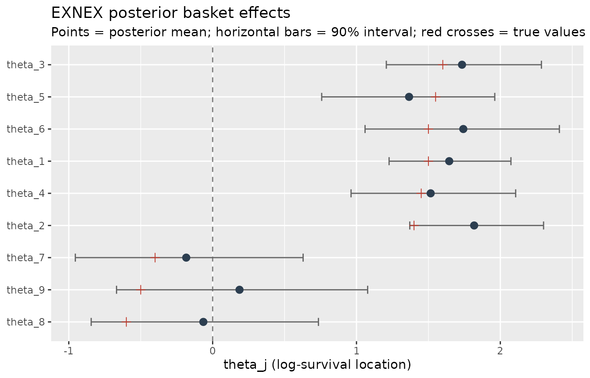

The EXNEX Model, Priors, and Data Augmentation
Source:vignettes/model-and-methods.Rmd
model-and-methods.RmdIntroduction
Basket trials enroll patients into several small groups (baskets), often defined by a biomarker, tumor histology, or cancer type, that are studied under a common protocol. Because each basket typically contains only a handful of patients, separately estimating an effect in every basket is imprecise, while pooling all patients into a single estimate ignores real differences between baskets. Borrowing of information across baskets strikes a middle ground: baskets that look alike share strength, while baskets that disagree with the majority are allowed to stand apart.
The EXNEX (Exchangeable–Non-Exchangeable) framework
extends the standard exchangeable hierarchical model by attaching a
latent indicator to every basket that selects whether its effect is
drawn from a shared exchangeable component or from a
basket-specific non-exchangeable prior [@neuenschwander2016]. exnexSurv
implements EXNEX for right-censored, log-normal survival data using a
data-augmented Gibbs sampler written in C++ via Rcpp and RcppArmadillo
[@eddelbuettel2011rcpp;
@sanderson2016armadillo].
This vignette explains the model, the priors and how to customize them, the data augmentation mechanism that makes the sampler exact and fast, the systematic Gibbs scan, and what the fitted object contains. A short worked example illustrates shrinkage and prior customization. The statistical methodology is described in detail in the companion paper (Ney, 2026); the performance numbers quoted in the last section are taken from it.
The model
For patient let denote the true event time, the censoring time, the observed follow-up time, the event indicator, the basket assignment, and a -vector of covariates. The complete model is
with , , by default, and the diffuse hyperpriors
Here is the covariate-adjusted location of log survival in basket . Because the model is log-normal, is the ratio of conditional median survival times between baskets and . Notation is summarized in Table .
| Symbol | Meaning |
|---|---|
| , , | true event time, censoring time, observed time |
| event indicator (1 = observed event, 0 = censored) | |
| , | basket index of patient ; number of baskets |
| , | covariate vector; number of covariates |
| log-location effect of basket (target of inference) | |
| regression coefficients | |
| common residual variance | |
| , | exchangeable mean and between-basket variance |
| latent indicator: = exchangeable, = non-exchangeable | |
| prior probability that basket is exchangeable | |
| , | prior mean and variance of the non-exchangeable component |
The residual variance is assumed common across baskets. This is a deliberate choice: the smallest baskets contain roughly five to fifteen patients and even fewer observed events, so basket-specific residual variances would be weakly identified and highly sensitive to the prior. Clinically relevant between-basket heterogeneity is instead represented through the location effects and the between-basket variance . This restriction is a limitation of the model and is examined empirically in the companion paper.
Priors and how to customize them
Normal priors are parameterized by variance. A value of corresponds to a prior standard deviation of on the log-time scale, which we treat as an extremely diffuse reference default rather than a clinically elicited prior. The inverse-Gamma priors use the shape–rate parameterization: has density , with mean for .
The table below lists every prior hyperparameter, its default, and its role.
priors field |
Role | Default |
|---|---|---|
a_sigma, b_sigma
|
shape, rate of prior |
2, 2
|
a_tau, b_tau
|
shape, rate of prior |
2, 2
|
p_mix |
mixture weight | 0.5 |
m_mu, v_mu
|
prior mean, variance of |
0, 1e4
|
m_nex, v_nex
|
prior mean, variance of non-exchangeable component |
0, 1e4
|
v_beta |
variance of the regression-coefficient prior (precision ) | 1e4 |
All fields are optional: absent fields keep the defaults and unknown
fields are ignored. Customize a prior by passing a named list to
exnex_surv():
fit <- exnex_surv(
Surv(time, event) ~ group,
data = d,
priors = list(
p_mix = 0.7,
v_nex = 10,
a_tau = 3,
b_tau = 3,
v_beta = 10
)
)The fields p_mix, m_nex, and
v_nex each accept either a scalar (replicated across all
baskets) or a numeric vector of length
with one value per basket, matching the basket-specific
notation
,
,
of the model. This makes it possible, for example, to give some baskets
a strong non-exchangeable prior while leaving the others exchangeable.
The sampler validates the inputs: p_mix must lie strictly
between 0 and 1 for every basket, variances must be positive, and a
supplied vector must have exactly
elements.
After a fit, fit$resolved_priors reports the
hyperparameters that were actually used (defaults merged with any
overrides), which is a convenient way to confirm your customization was
applied:
library(exnexSurv)
library(survival)
library(ggplot2)
simulate_basket_data <- function(
theta,
sigma = 1.2,
beta = c(0.8, -0.5),
group_sizes = c(30, 24, 20, 16, 14, 11, 8, 7, 5),
target_cens = 0.30,
seed = 1
) {
set.seed(seed)
K <- length(theta)
group <- rep(seq_len(K), times = group_sizes)
n <- length(group)
X1 <- rnorm(n)
X2 <- rnorm(n)
eta <- theta[group] + X1 * beta[1] + X2 * beta[2]
log_time <- eta + rnorm(n, 0, sigma)
true_time <- exp(log_time)
censor_fun <- function(c) mean(true_time > c) - target_cens
censor_time <- uniroot(censor_fun, c(min(true_time), max(true_time)))$root
data.frame(
time = pmin(true_time, censor_time),
event = as.integer(true_time <= censor_time),
group = factor(group),
X1 = X1,
X2 = X2
)
}
theta_true <- c(1.5, 1.4, 1.6, 1.45, 1.55, 1.5, -0.4, -0.6, -0.5)
d <- simulate_basket_data(theta_true, seed = 1)
# small, quick fit just to inspect resolved_priors
quick <- exnex_surv(
Surv(time, event) ~ group + X1 + X2,
data = d,
priors = list(p_mix = 0.7, v_nex = 10),
iter = 400, warmup = 200, chains = 1
)
print(quick$resolved_priors)
#> $a_sigma
#> [1] 2
#>
#> $b_sigma
#> [1] 2
#>
#> $a_tau
#> [1] 2
#>
#> $b_tau
#> [1] 2
#>
#> $p_mix
#> [1] 0.7
#>
#> $m_mu
#> [1] 0
#>
#> $v_mu
#> [1] 10000
#>
#> $m_nex
#> [1] 0
#>
#> $v_nex
#> [1] 10
#>
#> $v_beta
#> [1] 10000The printed list shows the customized p_mix and
v_nex alongside the default values for the fields you did
not touch.
Model variants
The EXNEX hierarchy is flexible enough to recover two familiar alternatives, which are useful as references for comparison:
| Setting | Description | How to approximate |
|---|---|---|
| EXNEX (default) | selective borrowing via latent | the default prior |
| EX (full exchangeability) | all share | p_mix = 0.9999999 |
| No pooling | independent basket effects |
p_mix = 1e-6, large v_nex
|
Because the mixture weight is validated to be strictly between 0 and
1, a fully exchangeable model is approximated with p_mix
extremely close to 1, and a no-pooling model with p_mix
extremely close to 0 together with a diffuse v_nex.
Complete pooling (a single shared intercept) is not directly
expressible in the current formula interface, which requires at least
one right-hand-side variable to identify the group; it can be emulated
by fitting a single basket.
Data augmentation
The sampler is best understood as a missing-data construction. The censored event times are, literally, missing observations: for a censored patient we know only that , and if we could observe the true the likelihood would be a complete-data Gaussian regression. Data augmentation [@tanner1987calculation] treats the unobserved quantities as additional unknowns and alternates between imputing them from their conditional distribution and updating the model parameters.
Why is the observed-data likelihood inconvenient? For an observed event at time , the log-normal density contributes a Gaussian term in , but a censored observation contributes only the survival probability
The standard Normal CDF has no antiderivative in elementary functions; equivalently, the censored contribution is an integral of the complete-data Gaussian likelihood over the region . This integral cannot be collapsed into a conjugate update and would have to be evaluated numerically at every parameter value. Data augmentation sidesteps the integral entirely: instead of evaluating , the sampler draws the missing log-time from its conditional distribution, after which only the complete-data Gaussian likelihood remains.
Conditional on the parameters, a censored log-time follows a truncated Normal,
whose density is the Gaussian density restricted to the censored region and renormalized. Draws are generated by inverse-CDF transformation evaluated entirely in log space, which remains numerically stable when the censoring threshold is far in the upper tail and needs no accept–reject step. After every censored is imputed, the model is an ordinary Gaussian linear regression and every parameter block has a known full conditional.
The joint posterior kernel makes the conjugacy explicit:
where is the Normal density with mean and variance . Every factor is a known kernel, which is what makes the systematic scan of the sampler exact. It also explains a geometric advantage over Hamiltonian samplers on the observed-data posterior: marginalizing out the discrete indicators leaves a mixture of up to Normal components in the basket-effect space, a multimodal geometry that is hard for NUTS to navigate. The augmented sampler keeps the indicators explicit and updates them one at a time, so it never has to traverse that mixture landscape.
The Gibbs sampler
Each iteration performs the following systematic scan.
# 1. Impute censored log-event times z_i ~ TN(log Y_i, Inf)(eta_i, sigma^2)
# 2. Update residual variance sigma^2
# 3. Update regression coefficients beta
# 4. Update basket effects theta_j ~ N(m_j, V_j)
# 5. Update mixture indicators Z_j ~ Bern(p_j)
# 6. Update exchangeable mean mu and between-basket variance tau^2The full conditionals are all conjugate. For the basket effect, collecting every quadratic term in gives a Normal whose precision is the sum of the data precision and the prior precision of the selected mixture component, and whose mean is the corresponding precision-weighted average:
where is the number of patients in basket . A basket with many events is dominated by its own data, while a sparse basket leans on the exchangeable mean when borrowing is active and on its own non-exchangeable prior otherwise.
The allocation indicator follows from Bayes’ rule applied to the two-component mixture:
A basket effect strongly supported by the exchangeable component is more likely to keep borrowing, while a basket that disagrees with the majority tends to switch to its own non-exchangeable prior.
The remaining updates are fully conjugate. Let be the set of baskets currently allocated to the exchangeable component. Then
where denotes the vector with entries . These expressions use the default hyperparameters (, , prior precision ); the generic versions with , , , , and are what the sampler actually implements, and they reduce to the forms above at the defaults.
What is fitted and what is returned
The sampler updates every parameter at each iteration, but the fitted
object stores only the quantities of primary interest.
Retained posterior draws (columns of
fit$draws):
| Columns | Meaning |
|---|---|
theta_1, …, theta_K
|
basket effects |
beta_1, …, beta_P
|
regression coefficients (if ) |
sigma2 |
residual variance |
Not retained (used internally and updated at every iteration, but not saved to conserve memory, exactly as the companion paper’s Gibbs implementation does): the latent indicators , the exchangeable mean , and the between-basket variance .
The number of rows in fit$draws is
,
one row per post-warmup iteration per chain. The full
exnex_surv object returned by exnex_surv() has
the following components:
fit$draws # posterior draws, data.frame
fit$data # time, event, group, X, n, n_groups, n_covariates, cov_names, chain_seeds
fit$priors # the priors list you supplied
fit$resolved_priors # defaults merged with your overrides
fit$iter, fit$warmup, fit$chains # MCMC settings
fit$blueprint # hardhat blueprint for the formula / dataThree S3 methods are provided: print() gives a compact
summary, summary() returns a data frame of posterior means,
standard deviations, and credible intervals per parameter, and
plot() draws per-parameter traceplots (using
bayesplot). The low-level kernel
cpp_exnex_gibbs() is also exposed for programmatic use but
is intended for advanced users; the exnex_surv() function
handles data preparation, validation, multiple chains, and reproducible
seeds on top of it.
Worked example: selective borrowing
We simulate a nine-basket trial with unbalanced sample sizes and two resistant outlier baskets. Baskets 1–6 are responsive (true log-locations near a common positive mean), while baskets 7–9 are resistant outliers well below the majority.
theta_true
#> [1] 1.50 1.40 1.60 1.45 1.55 1.50 -0.40 -0.60 -0.50
mean(d$event) # realized censoring proportion
#> [1] 0.6962963We fit the EXNEX model with two chains in parallel:
fit <- exnex_surv(
Surv(time, event) ~ group + X1 + X2,
data = d,
iter = 1500, warmup = 750, chains = 2, parallel_chains = 2, seed = 42
)
print(fit, show_trace = FALSE)
#> <exnex_surv model>
#> Draws: 1500 total post-warmup samples
#> 750 post-warmup samples per chain
#> Groups: 9 | Covariates: 2
#> MCMC: iter = 1500 , warmup = 750 , chains = 2
#>
#> parameter mean sd q05 q50 q95
#> theta_1 1.6446482 0.2621898 1.2266220 1.64900902 2.0738019
#> theta_2 1.8179920 0.2888510 1.3704760 1.81175632 2.3005433
#> theta_3 1.7337071 0.3252604 1.2074354 1.73014932 2.2856673
#> theta_4 1.5157022 0.3413546 0.9622640 1.50817949 2.1066713
#> theta_5 1.3655601 0.3714221 0.7581575 1.36540753 1.9613142
#> theta_6 1.7425843 0.4055059 1.0596356 1.74360820 2.4105329
#> theta_7 -0.1835898 0.4796262 -0.9545207 -0.17209279 0.6290550
#> theta_8 -0.0645867 0.4774981 -0.8442716 -0.06794569 0.7354811
#> theta_9 0.1867690 0.5250931 -0.6681145 0.19578477 1.0776457
#> beta_1 0.9987511 0.1619858 0.7389669 0.99840295 1.2802154
#> beta_2 -0.6046150 0.1261888 -0.8181472 -0.60070002 -0.3996404
#> sigma2 1.8439192 0.2764157 1.4229329 1.82455222 2.3440627The posterior means and credible intervals show how the sampler borrows information. The responsive baskets are estimated close to their shared value, while the resistant baskets are partially shrunk toward the majority but remain clearly distinct from it:
summ <- summary(fit)
th <- summ[grepl("^theta_", summ$parameter), ]
th$true <- theta_true
ggplot(th, aes(x = mean, y = reorder(parameter, true))) +
geom_vline(xintercept = 0, linetype = 2, colour = "grey50") +
geom_errorbarh(aes(xmin = q05, xmax = q95), height = 0.25, colour = "grey40") +
geom_point(aes(x = true), shape = 3, size = 2.2, colour = "#C0392B") +
geom_point(size = 2.6, colour = "#2C3E50") +
labs(
title = "EXNEX posterior basket effects",
subtitle = "Points = posterior mean; horizontal bars = 90% interval; red crosses = true values",
x = "theta_j (log-survival location)", y = NULL
)
The responsive baskets (1–6) have tight intervals around their common value. The resistant baskets (7–9) are pulled partway toward the majority – their intervals lie between their true negative values and the positive exchangeable mean – illustrating that EXNEX reduces variance for discordant baskets but does not eliminate shrinkage.
Customizing the non-exchangeable prior per basket
Suppose the design protocol fixes baskets 7–9 as non-exchangeable
a priori with a strong prior, so that they are not allowed to
borrow. We can express this with basket-specific vectors for
p_mix and v_nex:
fit_nex <- exnex_surv(
Surv(time, event) ~ group + X1 + X2,
data = d,
priors = list(
p_mix = c(rep(0.9, 6), rep(1e-6, 3)), # baskets 7-9 almost surely non-exchangeable
v_nex = c(rep(1e4, 6), rep(1e-4, 3)) # and tightly prior-ed around m_nex = 0
),
iter = 1000, warmup = 500, chains = 1, seed = 7
)
fit_nex$resolved_priors$p_mix
#> [1] 9e-01 9e-01 9e-01 9e-01 9e-01 9e-01 1e-06 1e-06 1e-06The resolved_priors report confirms the per-basket
values were applied. With v_nex tiny, baskets 7–9 are
pulled hard toward
regardless of the data, which is a strong (and here deliberately
misspecified) assumption. This example is meant to illustrate the
mechanics of basket-specific priors, not to recommend a
particular prior.
Comparing EXNEX, EX, and No pooling
As a final illustration, compare the three model variants described above by overlaying their posterior basket-effect means:
fit_ex <- exnex_surv(
Surv(time, event) ~ group + X1 + X2, data = d,
priors = list(p_mix = 0.9999999), # EX: full borrowing
iter = 1000, warmup = 500, chains = 1, seed = 11
)
fit_np <- exnex_surv(
Surv(time, event) ~ group + X1 + X2, data = d,
priors = list(p_mix = 1e-6, v_nex = 1e4), # No pooling
iter = 1000, warmup = 500, chains = 1, seed = 13
)
means_of <- function(f) {
s <- summary(f)
setNames(s$mean, s$parameter)
}
compare <- data.frame(
theta = theta_true,
truth = theta_true,
exnex = means_of(fit)[grepl("^theta_", names(means_of(fit)))],
ex = means_of(fit_ex)[grepl("^theta_", names(means_of(fit_ex)))],
npool = means_of(fit_np)[grepl("^theta_", names(means_of(fit_np)))]
)
compare
#> theta truth exnex ex npool
#> theta_1 1.50 1.50 1.6446482 1.65289347 1.6689805
#> theta_2 1.40 1.40 1.8179920 1.84371052 1.8706961
#> theta_3 1.60 1.60 1.7337071 1.72777603 1.8047064
#> theta_4 1.45 1.45 1.5157022 1.50005465 1.5775365
#> theta_5 1.55 1.55 1.3655601 1.38489342 1.4235149
#> theta_6 1.50 1.50 1.7425843 1.73508263 1.8945620
#> theta_7 -0.40 -0.40 -0.1835898 -0.17724959 -0.5071769
#> theta_8 -0.60 -0.60 -0.0645867 -0.02207626 -0.3644995
#> theta_9 -0.50 -0.50 0.1867690 0.23799078 -0.1381373exnex recovers the responsive baskets well and only
partially shrinks the resistant ones; ex pulls every basket
(including the outliers) strongly toward the common mean; and
npool keeps each basket at its own noisy estimate. These
three posterior summaries encode exactly the three borrowing strategies
that EXNEX is designed to interpolate between.
Performance and validation
In the companion paper the data-augmented Gibbs sampler is compared with a marginalized Stan NUTS implementation of the same EXNEX model on 12,000 simulated trials (plus 1,000 TCGA-calibrated). On the four primary scenarios the two implementations produced essentially identical posterior summaries, but Gibbs averaged roughly 0.70–0.74 seconds per trial versus 16.96–17.53 seconds for Stan (a median runtime ratio of about 25), and it delivered roughly ten times more bulk effective samples per second (3,854–4,032 versus 338–391). Operating characteristics (bias, RMSE, interval coverage) for EXNEX were close to nominal across scenarios and, under Mixed efficacy, EXNEX clearly outperformed both Complete pooling (which failed on the resistant baskets) and No pooling (which was inefficient on the responsive baskets). These figures are hardware- and implementation-dependent; they are quoted here to convey the order of magnitude of the speedup that data augmentation makes possible.
References
- Neuenschwander, B., Wandel, S., Roychoudhury, S., & Bailey, S. (2016). Robust exchangeability designs for early phase clinical trials with multiple strata. Pharmaceutical Statistics, 15(2), 123–134.
- Tanner, M. A., & Wong, W. H. (1987). The calculation of posterior distributions by data augmentation. Journal of the American Statistical Association, 82(398), 528–540.
- Albert, J. H., & Chib, S. (1993). Bayesian analysis of binary and polychotomous response data. Journal of the American Statistical Association, 88(422), 669–679.
- Eddelbuettel, D., & François, R. (2011). Rcpp: Seamless R and C++ integration. Journal of Statistical Software, 40(8), 1–18.
- Sanderson, C., & Curtin, R. (2016). Armadillo: A template-based C++ library for linear algebra. Journal of Open Source Software, 1(2), 26.
- Vehtari, A., Gelman, A., Simpson, D., Carpenter, B., & Bürkner, P.-C. (2021). Rank-normalization, folding, and localization: An improved for assessing convergence of MCMC. Bayesian Analysis, 16(2), 667–718.
- Ney, V. (2026). Bayesian EXNEX survival models with data augmentation for basket trials. Manuscript.